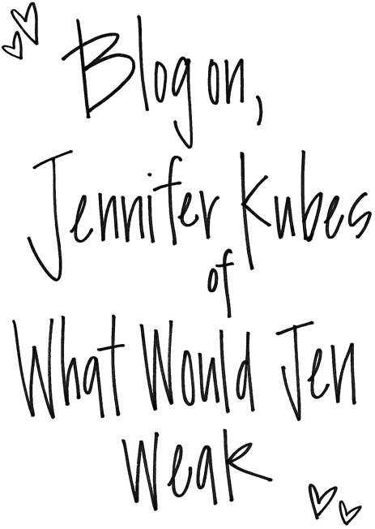

What Would Jen Wear by Jennifer Kubes
If your question is what to wear, Jennifer Kubes has the answer. What Would Jen Wear is a collection of outfit inspiration including everything from boho to bold. Don’t expect Jen to look like every other blogger. Her aim is to serve up looks that you wouldn’t ordinarily see. She dresses her way and encourages others to do the same. Take a page from Jen’s stylish book and learn more about her blogging journey via Blogspotter.
How long have you been blogging? I started blogging in the fall of 2011 after a lot of persistence from my family and friends. Having a space to share my very own style and fashion advice was something I couldn’t wait to dive into.
When you started blogging, did you want readers to turn to you for advice and ask What Would Jen Wear? I did. I’ve had so many people come to me for advice over the last 10-15 years regarding what to wear on any specific occasion, that I thought maybe my opinions could speak to a bigger audience.
What is the coolest thing to happen since you started blogging? I would honestly say it’s the friends I have made. Blogging is such a unique way to connect with people that you have a ridiculous amount of things in common with. Living in Dallas, I’ve been so fortunate to meet and become great friends with several bloggers here. And even outside of Dallas County, I’ve formed incredible friendships with girls all over the United States. Having a supportive community of girlfriends like this is amazing and I don’t think anything else exists like it.
How would you describe your personal style? My personal style is always evolving so it’s hard to put myself into one or two categories. I describe it as an eclectic mix of just about everything. I get dressed based off of my mood or what has inspired me lately. I draw a lot of my inspiration from the fashion icons of the 1960’s and 1970’s (Ali McGraw, Jane Birkin, Brigitte Bardot, Britt Ekland) but I’m also very heavily influenced by basic street style. It doesn’t get any better than that.
Has pregnancy changed your style? Pregnancy has toned down my style a bit, but it’s also made me embrace my inner hippie. I can’t dress as colorful and crazy as I used to, which I miss, but I have fallen in love with dressing my bump in very comfortable, bohemian styles.
How does your blog differ from other personal style blogs? With so many great personal style blogs out there, it’s difficult to really differentiate yourself. With What Would Jen Wear, I really focus on styling outfits that aren’t sprinkled all over other fashion blogs and social platforms, and I try to encourage people to step outside of the box when it comes to dressing up (or down). I’ve also been blessed to be having my first child in May, so What Would Jen Wear has transitioned into the world of maternity bloggers lately. But one of the biggest differentiators is the constant communication I have with my readers. On my “Ask Jen” page, I encourage people to ask me any kind of styling questions they can dream of and I respond to them via email with fun fashion tips and links to particular stores, items, etc. I love having that back-and-forth conversation with someone who genuinely trusts my opinion. It always makes my day.
How do you choose outfits worthy of posting? First and foremost, the outfit has to be unique. I see so many blogs out there that look the same. They don’t inspire me or show me a new way to pair something together… they just make me want blue mirror Ray-Ban lenses because… well… everyone is wearing them. And if I’m being honest, I will probably buy blue mirror Ray-Ban lenses soon because all of the bloggers look so cute in them. But, I want my blog to stand out and really give people ideas to help revamp their closet. I know that a lot of girls don’t have the money to buy everything they see on blogs all the time, so if I can put a new outfit together that reminds them of something they already have in their closet or if I can inspire them to step outside of the box and wear something a little different than they normally would, then I’ve succeeded.
"Rome was not built in a day, so stay strong, dedicated and determined and you will see results." — Jennifer Kubes
What are your favorite colors and patterns to wear? Sequins, leopard print and a lot of bright colors - all in moderation, of course. I like finding that unique conversation piece and pairing it with something that can take a backseat. I love putting patterns together that normally wouldn’t jive and I love to experiment with color pairings. I was born with an artist’s eye so I’m very picky when it comes to colors, but I think one of my greatest strengths is pairing them together.
Where are some of your favorite places to shop and why? I will always be J.Crew’s number one fan because I love the preppy look every now and then, but you can also find me at Nordstrom, Zara, and ASOS for those unique or glamorous pieces. I also love stopping by local thrift stores once a month or so to search for one-of-a-kind pieces – especially sequins.
How long does an average blog post take? I put a lot of time into my posts. I’m so picky with the photos I share and the content I provide with the photos. I want each post to have something tangible for my readers but I also want the posts to appeal to more than one audience – especially now that I’ve been engulfed in maternity fashion.
Do you have any plans for the future of your blog? After the baby, I plan to kick my blog into high gear. I have a notebook full of that I cannot wait to executive and I have some exciting collaborations in the works. More than anything, I’m really excited to get back into my old wardrobe and share those bright, colorful styles I’ve been missing. I also hope to introduce some baby fashion for the new mom’s out there, because I cannot wait to dress my little peanut. The possibilities are endless and I’m shooting for the stars with What Would Jen Wear.
Which item(s) in your wardrobe could you never live without? Leopard booties, kimonos, colorful pencil skirts and my collection of sequin jackets.
What has maintaining a blog taught you? How important it is to be consistent and to never stop looking for inspirations.
Is there a message you would like to convey to your readers? (Besides what to wear, of course!) Yes! Don’t listen to fashion rules and don’t be afraid to give trends a try. I hear so many people say “I could never pull that off”. Clothing shouldn’t be intimidating – life is one big game of dress up and it should be thoroughly enjoyed.
Any advice for aspiring personal style bloggers or blogging mommy’s-to-be? For personal style bloggers… Stay true to yourself and your passion for fashion and your blog will go far. Rome wasn’t built in a day, so stay strong, dedicated and determined and you will see results. I promise.
For mommy’s-to-be… Don’t succumb to maternity clothing – aside from basics – unless it’s really, really cute. There are so many great non-maternity options out there that will last you through pregnancy and beyond and they are so much fun to find. But most importantly, have fun dressing a bump, it’s one of the greatest honors in the world.
